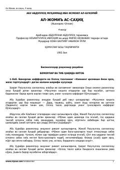

SBImom Buxoriy sahih hadislar to'plamining to'rtinchi jildi.
Ushbu kitob Imom Buxoriyning mashhur «Al-Jome' as-sahih» (Ishonarli to'plam) asarining 4-jildi bo'lib, bemorlar va tabobatga oid hadislar, boblar va ularning sharhlarini o'z ichiga oladi. Asar arab tilidan tarjima qilinib, ilmiy-adabiy tahrir ostida nashr etilgan.